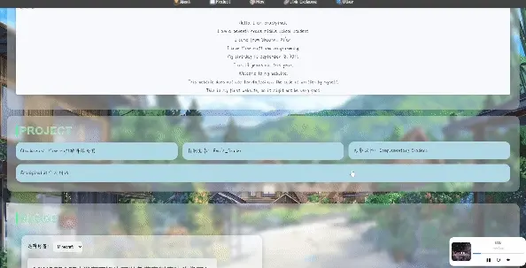

效果展示

实现过程
-
检测鼠标滚动
首先，我们需要检测你的滚动动作。通过
wheel事件，我们可以检测到你的鼠标滚动状态，从而知道是向上还是向下滚动、滚动了多少。 -
更新目标位置
当检测到滚动状态后，我们可以根据你滚动的动作来更新目标位置。如果你在向下滚动，就把目标位置往下移；如果你在向上滚动，目标位置就往上移。
-
平滑过渡
为了让滚动看起来更平缓，我们需要在你当前的位置和目标位置之间进行一些过渡。说白了就是减缓滚动速度，随着你滚动时间的变化慢慢变快。惯性大小通过以下公式进行计算：
currentScroll += (targetScroll - currentScroll) * inertia;currentScroll: 当前的滚动位置。
targetScroll: 目标滚动位置，即希望滚动到的位置。
inertia: 惯性因子，通常是一个介于 0 和 1 之间的值，用于控制滚动的速度和流畅度。 -
动画效果
我们用
requestAnimationFrame（一个浏览器提供的API）来处理动画。这个方法会在浏览器下次重绘之前调用我们的函数，让动画看起来更流畅。在每一帧更新当前滚动的位置，然后用window.scrollTo把页面滚动到目标位置。 -
停止条件
当你没有滚动的时候。也就是说当前滚动位置和目标位置之间的差距很小，我们就可以关闭动画效果，这样就能避免不必要的计算，提升性能。
上代码！
听起来挺复杂，其实实现效果还是挺简单的
JavaScript code
let scrollSpeed = 40; // 这个值越大滚动速度越快，可以自行调整
let currentScroll = window.scrollY;
let targetScroll = currentScroll;
let inertia = 0.001; // 惯性因子，前面有讲到，建议别改
function smoothScroll() {
currentScroll += (targetScroll - currentScroll) * inertia;
window.scrollTo(0, currentScroll);
if (Math.abs(targetScroll - currentScroll) > 0.1) {
requestAnimationFrame(smoothScroll);
}
}
window.addEventListener('wheel', function(event) {
event.preventDefault();
targetScroll += event.deltaY > 0 ? scrollSpeed : -scrollSpeed;
smoothScroll();
}, { passive: false });
HTML code
<script src="smoothScroll.js"></script>
对于特殊情况
如果你的网页里有锚点导航，那么直接使用上面这段代码的话会出问题，锚点导航会失效，这时候我们再添加一段JavaScript代码就好了。
实现过程
-
选择链接
document.querySelectorAll('a[href^="#"]')
这行代码选择所有 href 属性以#开头的链接，也就是提取锚点导航链接。 -
遍历链接
.forEach(anchor => {
对每个选择到的链接进行遍历，并为每个链接添加点击事件监听器（事件监听器用于检测你有没有点击锚点导航链接）。 -
添加事件监听器
anchor.addEventListener('click', function(e) {
当检测到链接被点击时，触发这个函数。 -
阻止默认行为
e.preventDefault();
阻止浏览器的默认行为，防止页面直接跳转到锚点指向的位置。 -
获取目标元素
const targetId = this.getAttribute('href');
const targetElement = document.querySelector(targetId);
获取你点击的链接的href属性值（就是目标锚点的 ID），并通过这个 ID 找到对应的元素。 -
检查目标元素是否存在
if (targetElement) {
检查目标元素是否存在，如果存在，继续执行程序。 -
设置滚动参数
targetScroll = targetElement.offsetTop;
const startScroll = currentScroll;
const distance = targetScroll - startScroll;
const duration = 300;
const startTime = performance.now();
targetScroll: 目标元素的垂直位置。
startScroll: 当前的滚动位置。
distance: 从当前滚动位置到目标位置的距离。
duration: 动画持续时间（300毫秒）。
startTime: 动画开始时间。 -
定义动画函数
function animateScroll(currentTime) {
定义一个滚动的动画函数。 -
计算动画进度
const elapsed = currentTime - startTime;
const progress = Math.min(elapsed / duration, 1);
const newScroll = startScroll + distance * progress;
elapsed: 从开始滚动到当前的时间。
progress: 动画的进度，在 0 和 1 之间。
newScroll: 根据进度计算新的滚动位置。 -
执行滚动
window.scrollTo(0, newScroll);
使用window.scrollTo方法滚动到新的位置。 -
检查是否完成滚动
if (progress < 1) { requestAnimationFrame(animateScroll); } else { currentScroll = newScroll; }
如果动画还未完成，使用requestAnimationFrame继续调用animateScroll。如果动画完成，更新 currentScroll 为新的滚动位置。 -
启动！！
requestAnimationFrame(animateScroll);
开始动画。
完整代码
JavaScript code
let scrollSpeed = 40;
let currentScroll = window.scrollY;
let targetScroll = currentScroll;
let inertia = 0.001;
function smoothScroll() {
currentScroll += (targetScroll - currentScroll) * inertia;
window.scrollTo(0, currentScroll);
if (Math.abs(targetScroll - currentScroll) > 0.1) {
requestAnimationFrame(smoothScroll);
}
}
window.addEventListener('wheel', function(event) {
event.preventDefault();
targetScroll += event.deltaY > 0 ? scrollSpeed : -scrollSpeed;
smoothScroll();
}, { passive: false });
document.querySelectorAll('a[href^="#"]').forEach(anchor => {
anchor.addEventListener('click', function(e) {
e.preventDefault();
const targetId = this.getAttribute('href');
const targetElement = document.querySelector(targetId);
if (targetElement) {
targetScroll = targetElement.offsetTop;
const startScroll = currentScroll;
const distance = targetScroll - startScroll;
const duration = 300;
const startTime = performance.now();
function animateScroll(currentTime) {
const elapsed = currentTime - startTime;
const progress = Math.min(elapsed / duration, 1);
const newScroll = startScroll + distance * progress;
window.scrollTo(0, newScroll);
if (progress < 1) {
requestAnimationFrame(animateScroll);
} else {
currentScroll = newScroll;
}
}
requestAnimationFrame(animateScroll);
}
});
});
感谢阅读！
码字不易，转载请注明出处